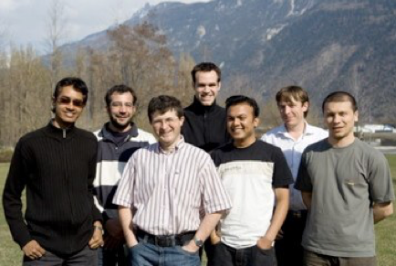

Research Team 2009



During the past years I had the chance to work with those folks:
-
•Dr Agnes Just, PhD student, graduated in 2006
-
•Dr Yann Rodriguez, PhD student graduated in 2006
-
•Dr Fabien Cardinaux, PhD student graduated in 2005
-
•Jordi Sanchez-Riera, Master student, 2009
-
•Javier Galbally, PhD student, 2009
-
•Simon Jacquier, EPFL Master student, 2008
-
•Anh-Thu Nguyen, EPFL Master student, 2007
-
•Jean Keomany, EPFL Master student, 2006
-
•Tiffany Sauquet, EURECOM Master student, 2005
Thanks to all of them.
From left to right: Anindya Roy, Guillaume Heusch, Sébastien Marcel, Niklas Johansson, Venkatesh Bala Subburaman, Christopher Mc Cool and Cosmin Atanasoaei
The Team
-
•Dr Christopher Mc Cool (PostDoc) started in March 2008
-
•Guilaume Heusch (PhD student) started in 2006
-
•Anindya Roy (PhD student) started in August 2007
-
•Venkatesh Bala Subburaman (PhD student) started in September 2007
-
•Cosmin Atanasoaei (PhD student) started in May 2008
-
•Niklas Johansson (PhD student) started in September 2008
A Tribute to Students